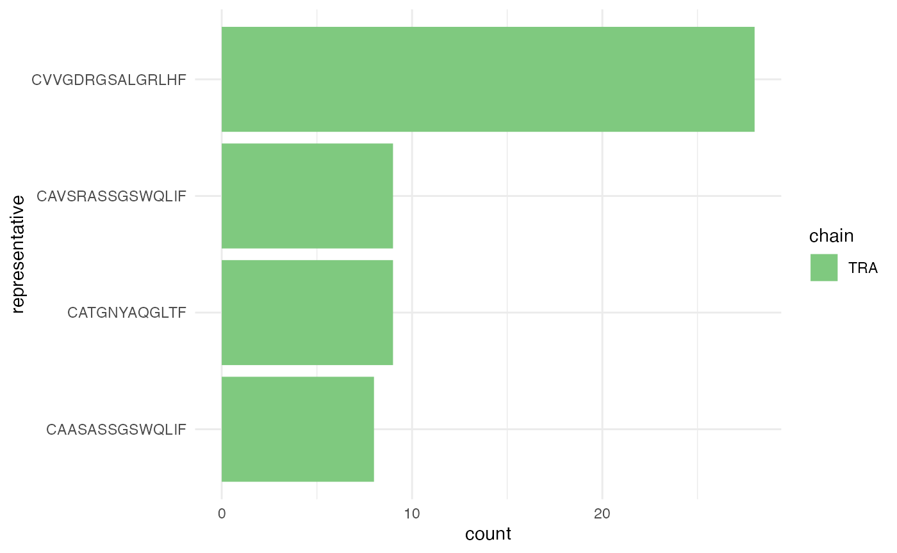

library(CellaRepertorium)
library(dplyr)
#>
#> Attaching package: 'dplyr'
#> The following objects are masked from 'package:stats':
#>
#> filter, lag
#> The following objects are masked from 'package:base':
#>
#> intersect, setdiff, setequal, union
library(ggplot2)
library(readr)
library(tidyr)
library(stringr)
library(purrr)Load filtered contig files
data(contigs_qc)
MIN_CDR3_AA = 6
cdb = ContigCellDB_10XVDJ(contigs_qc, contig_pk = c('barcode', 'pop', 'sample', 'contig_id'), cell_pk = c('barcode', 'pop', 'sample'))
cdb$contig_tbl = dplyr::filter(cdb$contig_tbl, full_length, productive == 'True', high_confidence, chain != 'Multi', str_length(cdr3) > MIN_CDR3_AA) %>% mutate( fancy_name = fancy_name_contigs(., str_c(pop, '_', sample)))832 good chains (either TRA or TRB); each cell can appear more than once.
Chain pairings
paired_chain = enumerate_pairing(cdb, chain_recode_fun = 'guess')
ggplot(paired_chain, aes(x = interaction(sample, pop), fill = pairing)) + geom_bar() + facet_wrap(~canonical, scale = 'free_x') + coord_flip() + theme_minimal()
Cluster CDR3 protein sequences
aa80 = cdhit_ccdb(cdb, 'cdr3', type = 'AA', cluster_name = 'aa80', identity = .8)
aa80 = fine_clustering(aa80, sequence_key = 'cdr3', type = 'AA', keep_clustering_details = TRUE)
#> Calculating intradistances on 988 clusters.
#> Summarizing
# This maybe should be a turned into a function
# Other plots should be considered:
# That show how clusters are split between samples, chains, etc
ggplot(aa80$cluster_tbl %>% filter(n_cluster>1) %>% gather(key, value, -aa80, -fc) , aes(x = value))+ facet_wrap(~key, scales = 'free') + geom_histogram() + scale_y_sqrt()
#> `stat_bin()` using `bins = 30`. Pick better value with `binwidth`.
We cluster the CDR3 translated amino acid residues with the program CD-HIT. A sequence is included in a cluster if it matches by 100% similarity and has the same CDR3 length. Note that this can and should be relaxed – especially in the beta chain we see “near clones” that only differ by a residue or two, seemingly in stylized places.
Cluster CDR3 DNA sequences
cdb = cdhit_ccdb(cdb, 'cdr3_nt', type = 'DNA', cluster_name = 'DNA97', identity = .965, min_length = MIN_CDR3_AA*3-1, G = 1)
cdb = fine_clustering(cdb, sequence_key = 'cdr3_nt', type = 'DNA')
#> Calculating intradistances on 1342 clusters.
#> Summarizing
ggplot(cdb$cluster_tbl %>% filter(n_cluster>1) %>% gather(key, value, -DNA97) , aes(x = value))+ facet_wrap(~key, scales = 'free') + geom_histogram() + scale_y_sqrt()
#> `stat_bin()` using `bins = 30`. Pick better value with `binwidth`.
We can also cluster by DNA identity.
Cluster by V-J identity
germline_cluster = cluster_germline(cdb, segment_keys = c('v_gene', 'j_gene', 'chain'), cluster_name = 'segment_idx')
#> Warning in replace_cluster_tbl(ccdb, cluster_tbl, cl_con_tbl, cluster_pk =
#> cluster_name): Replacing `cluster_tbl` with DNA97.We can cluster by any other feature of the contigs. Here we cluster each contig based on the chain and V-J genes. This gives us the set of observed V-J pairings:
germline_cluster = fine_clustering(germline_cluster, sequence_key = 'cdr3_nt', type = 'DNA')
#> Calculating intradistances on 700 clusters.
#> Summarizing
#> Warning in left_join_warn(d_medoid, contig_tbl, by = ccdb$contig_pk, overwrite =
#> TRUE): Overwriting fields d(medoid), is_medoid in table contig_tbl
ggplot(germline_cluster$cluster_tbl %>% filter(chain == 'TRB'), aes(x = v_gene, y = j_gene, fill = n_cluster)) + geom_tile() + theme(axis.text.x = element_text(angle = 90))
Number of pairs
ggplot(germline_cluster$cluster_tbl %>% filter(chain == 'TRB'), aes(x = v_gene, y = j_gene, fill = avg_distance)) + geom_tile() + theme(axis.text.x = element_text(angle = 90))
Average Levenshtein distance of CDR3 within each pair. This might be turned into a z-score by fitting a weighted linear model with sum-to-zero contrasts and returning the pearson residuals. This could determine if a pairing has an unexpected small, or large, within cluster distance.
Oligo clusters
Next, we will examine the clusters that are found in many contigs. First we will get a canonical contig to represent each cluster. This will be the medoid contig, by default.
aa80 = canonicalize_cluster(aa80, representative = 'cdr3', contig_fields = c('cdr3', 'cdr3_nt', 'chain', 'v_gene', 'd_gene', 'j_gene'))
#> Filtering `contig_tbl` by `is_medoid`, override by setting `contig_filter_args == TRUE`aa80 now includes the fields listed in contig_fields in the cluster_tbl, using the values found in the medoid contig.
MIN_OLIGO = 7
oligo_clusters = filter(aa80$cluster_tbl, n_cluster >= MIN_OLIGO)
oligo_contigs = aa80
oligo_contigs$contig_tbl = semi_join(oligo_contigs$contig_tbl, oligo_clusters, by = 'aa80')
oligo_contigs
#> ContigCellDB of 54 contigs; 832 cells; and 4 clusters.
#> Contigs keyed by barcode, pop, sample, contig_id; cells keyed by barcode, pop, sample.Get contigs/cells/clusters found at least 7 times (across contigs). Note that replacing contig_tbl with the subset selected with the semi_join also automatically subsetted the cell_tbl and cluster_tbl.
oligo_clusters = oligo_contigs$contig_tbl %>% group_by(aa80) %>% summarize(`n subjects observed` = length(unique(sample))) %>% left_join(oligo_clusters)
#> Joining, by = "aa80"
knitr::kable(oligo_clusters %>% select(aa80:cdr3, chain:j_gene, avg_distance, n_cluster))| aa80 | n subjects observed | cdr3 | chain | v_gene | d_gene | j_gene | avg_distance | n_cluster |
|---|---|---|---|---|---|---|---|---|
| 111 | 6 | CVVGDRGSALGRLHF | TRA | TRAV11 | None | TRAJ18 | 0.6071429 | 28 |
| 172 | 5 | CAVSRASSGSWQLIF | TRA | TRAV9N-3 | None | TRAJ22 | 2.1111111 | 9 |
| 296 | 6 | CAASASSGSWQLIF | TRA | TRAV14D-2 | None | TRAJ22 | 1.5000000 | 8 |
| 808 | 4 | CATGNYAQGLTF | TRA | TRAV8D-2 | None | TRAJ26 | 1.3333333 | 9 |
Report some statistics about these expanded clusters.
oligo_plot = ggplot(oligo_contigs$contig_tbl, aes(x = representative, fill = chain)) + geom_bar() + coord_flip() + scale_fill_brewer(type = 'qual') + theme_minimal()
oligo_plot
These always come from a single chain.
oligo_plot + aes(fill = sample) + facet_wrap(~pop)
But come from multiple populations and samples.
Some simple phylogenetic relationships
library(ggdendro)
# This should be turned into a function in the package somehow
# But plot arguments will be super-variable
# Maybe just return the `hc` object?
dendro_plot = function(ccdb, idx, method = 'complete'){
h = filter(ccdb$cluster_tbl, !!sym(ccdb$cluster_pk) == idx) %>% pull(fc) %>% .[[1]]
quer = filter(ccdb$contig_tbl, !!sym(ccdb$cluster_pk) == idx)
hc = hclust(as.dist(h$distance_mat), method = method) %>% dendro_data(type = "rectangle")
hc$labels = cbind(hc$labels, quer)
ggplot(hc$segments, aes(x=x, y=y)) + geom_segment(aes(xend=xend, yend=yend)) +
theme_classic() + geom_text(data = hc$labels, aes(color = sample, label = fancy_name), size = 3, angle = 60) + scale_x_continuous(breaks = NULL) + ylab('AA Distance') + xlab('')
}
to_plot = filter(aa80$cluster_tbl, n_cluster >= MIN_OLIGO)
map(to_plot$aa80, ~ dendro_plot(aa80, .))
#> [[1]]
#>
#> [[2]]
#>
#> [[3]]
#>
#> [[4]]
Formal testing for frequency differences
library(lme4)
library(broom)
per_chain_sample = good_cluster_cells %>% group_by(sample, pop, chain) %>% summarize(total_cells = n(), weeks_premature = weeks_premature[1])
oligo_cluster_stat = semi_join(oligo_clusters, good_cluster_cells %>% select(dataset, contig_id)) %>% group_by(sample, pop, chain, cluster_idx) %>% summarize(n_cluster = n())%>% ungroup() %>% complete(sample, pop, nesting(cluster_idx, chain), fill = list(n_cluster = 0))
oligo_cluster_stat = left_join(oligo_cluster_stat, per_chain_sample, by = c('sample', 'pop', 'chain'))
stopifnot( all(colSums(with(oligo_cluster_stat, table(chain, cluster_idx)) > 0) == 1))
mm_out = suppressWarnings(oligo_cluster_stat %>% group_by(cluster_idx, chain) %>% do( glmer(cbind(n_cluster, total_cells) ~ pop + weeks_premature + (1|sample), data = ., family = 'binomial') %>% tidy(conf.int = TRUE)))mm_outj = filter(left_join(ungroup(mm_out), unique(oligo_clusters_all %>% select(representative, cluster_idx))), term %in% c('popCD31Pos', 'weeks_premature')) %>% mutate(ci_lo = AMmisc::clamp(conf.low), ci_hi = AMmisc::clamp(conf.high)) %>% arrange(desc(representative))
ggplot(mm_outj, aes(x = representative, ymin = ci_lo, ymax = ci_hi, y = clamp(estimate))) + geom_pointrange() + facet_wrap(~term, scales = 'free') + coord_flip() + theme_minimal() + geom_hline(yintercept = 0, lty = 2) + xlab("Isomorph") + ylab("log odds of isomorph")We test if the binomial rate of clone expression differs between CD31+/- or term, for each clone.
Clonal pairs
Next, we can examine the pairing between \(\alpha-\beta\) chains and see if any pairs are found more than once.
class_colors = tibble(chain = unique(aa80$cluster_tbl$chain)) %>% mutate(class_color = RColorBrewer::brewer.pal(length(chain),"Set1")[seq_along(chain)])
#> Warning in RColorBrewer::brewer.pal(length(chain), "Set1"): minimal value for n is 3, returning requested palette with 3 different levels
aa80$cluster_pk = 'representative'
pairing_list = pairing_tables(aa80, table_order = 2, orphan_level = 1, min_expansion = 3, cluster_keys = c('cdr3', 'representative', 'chain', 'v_gene', 'j_gene', 'avg_distance'))
#> Warning: Factor `cluster_idx.2` contains implicit NA, consider using
#> `forcats::fct_explicit_na`
#> Warning: Column `representative` joining factors with different levels, coercing
#> to character vectorpairing_tables finds all contig combinations of order table_order across cells. Among those combinations that occur at least min_expansion times, the expanded combinations and and any other combinations that shared an expanded combo.
pairs_plt = ggplot(pairing_list$cell_tbl, aes(x = cluster_idx.1_fct, y = cluster_idx.2_fct, color = sample, shape = pop)) + geom_jitter(width = .2, height = .2) + theme_minimal() + xlab('TRB') + ylab('TRA')
feature_tbl = left_join(bind_rows(pairing_list$idx1_tbl, pairing_list$idx2_tbl), class_colors)
#> Warning in bind_rows_(x, .id): binding factor and character vector, coercing
#> into character vector
#> Warning in bind_rows_(x, .id): binding character and factor vector, coercing
#> into character vector
#> Joining, by = "chain"
ylab = data_frame(representative = ggplot_build(pairs_plt)$layout$panel_params[[1]]$y.label) %>% left_join(feature_tbl) %>% mutate(class_color = ifelse(is.na(class_color), '#E41A1C', class_color))
#> Warning: `data_frame()` is deprecated, use `tibble()`.
#> This warning is displayed once per session.
#> Joining, by = "representative"
xlab = data_frame(representative = ggplot_build(pairs_plt)$layout$panel_params[[1]]$x.label) %>% left_join(feature_tbl) %>% mutate(class_color = ifelse(is.na(class_color), '#E41A1C', class_color))
#> Joining, by = "representative"
pairs_plt = pairs_plt + theme(axis.text.x = element_text(angle = 90, color = xlab$class_color, size = 8), axis.text.y = element_text(color = ylab$class_color, size = 8))
pairs_plt
Expanded clones
whitelist = oligo_clusters %>% dplyr::select(cluster_idx.1 = representative) %>% unique()
pairing_list = pairing_tables(aa80, canonicalize_fun = canonicalize_by_prevalence, table_order = 2, orphan_level = 1, min_expansion = Inf, cluster_whitelist = whitelist, cluster_keys = c('cdr3', 'representative', 'chain', 'v_gene', 'j_gene', 'avg_distance'))
pairs_plt = ggplot(pairing_list$cell_tbl, aes(x = cluster_idx.1_fct, y = cluster_idx.2_fct, color = sample, shape = pop)) + geom_jitter(width = .2, height = .2) + theme_minimal() + xlab('TRB') + ylab('TRA')
feature_tbl = left_join(bind_rows(pairing_list$idx1_tbl, pairing_list$idx2_tbl), class_colors)
ylab = data_frame(representative = ggplot_build(pairs_plt)$layout$panel_params[[1]]$y.label) %>% left_join(feature_tbl) %>% mutate(class_color = ifelse(is.na(class_color), '#E41A1C', class_color))
xlab = data_frame(representative = ggplot_build(pairs_plt)$layout$panel_params[[1]]$x.label) %>% left_join(feature_tbl) %>% mutate(class_color = ifelse(is.na(class_color), '#E41A1C', class_color))
pairs_plt = pairs_plt + theme(axis.text.x = element_text(angle = 90, color = xlab$class_color, size = 8), axis.text.y = element_text(color = ylab$class_color, size = 8))
pairs_pltBy setting min_expansion = Inf, cluster_whitelist = whitelist we can examine any pairings for a set of cluster_idx, in this case the ones that were seen multiple times. Interestingly (and unlike some human samples) the expanded clusters are \(\beta\)-chain, and their \(\alpha\) chains are sprinkled quite evenly across clusters.
Length of CDR3
aa80$contig_tbl = aa80$contig_tbl %>% mutate(cdr3_length = str_length(cdr3_nt))
ggplot(aa80$contig_tbl, aes(fill = pop, x= cdr3_length)) + geom_histogram(binwidth = 1, mapping = aes(y = ..density..)) + theme_minimal() + scale_fill_brewer(type = 'qual') + facet_grid(sample ~chain) + theme(strip.text.y = element_text(angle = 0)) + coord_cartesian(xlim = c(25, 55))
Plot the CDR3 length distribution for each sample and pop. There doesn’t appear to be a noticeable difference between BALB/c and C57BL/6J (b6) mice, but if we needed to make sure, an appropriate procedure would be to run a mixed model with a random sample effect (assumed to represent a biological replicate).
cdr_len = aa80$contig_tbl %>% group_by(chain) %>% do(broom::tidy(lme4::lmer(cdr3_length ~ pop + (1|sample), data = .), conf.int = TRUE))
#> boundary (singular) fit: see ?isSingular
#> Warning in bind_rows_(x, .id): binding factor and character vector, coercing
#> into character vector
#> Warning in bind_rows_(x, .id): binding character and factor vector, coercing
#> into character vector
#> boundary (singular) fit: see ?isSingular
#> Warning in bind_rows_(x, .id): binding factor and character vector, coercing
#> into character vector
#> Warning in bind_rows_(x, .id): binding character and factor vector, coercing
#> into character vector
ggplot(cdr_len %>% filter(group == 'fixed', term != '(Intercept)'), aes(x = interaction(chain, term), y = estimate, ymin = conf.low, ymax = conf.high)) + geom_pointrange() + theme_minimal() + coord_flip() + ylab('Length(CDR3 Nt)') + xlab('Term/Chain')
We end up with a (harmless) convergence warning about a singular fit. This is expected, because the samples aren’t actually replicates – they are just subsamples drawn for illustrative purposes. The Balbc mice have .5 fewer nucleotides per contig, on average, and this is not significant.